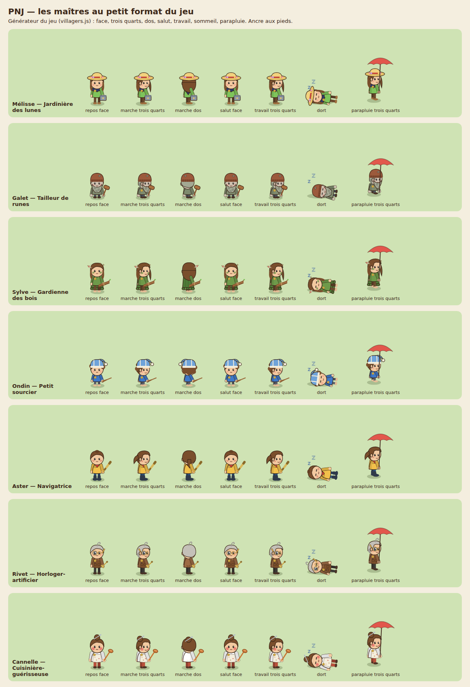
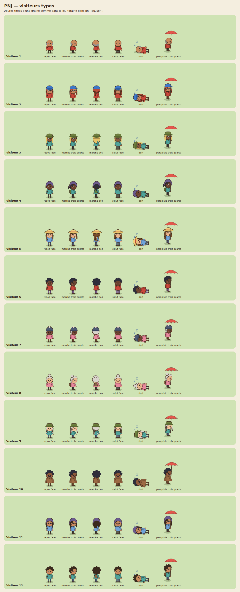
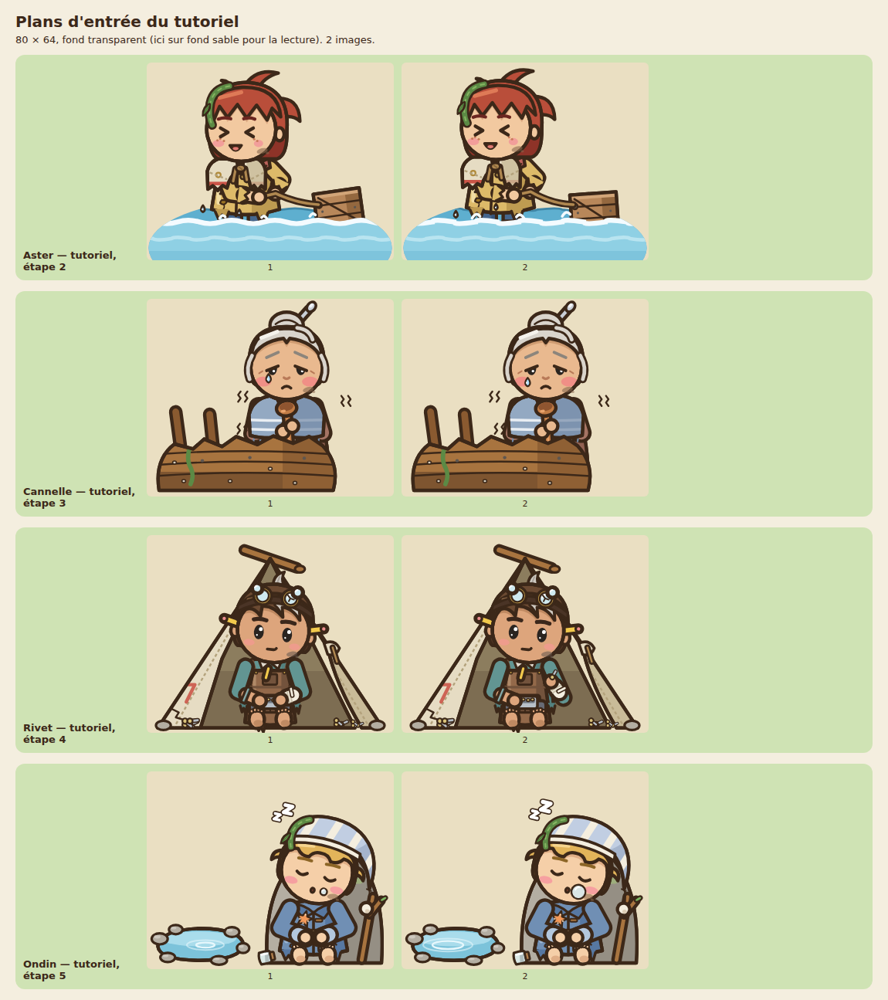
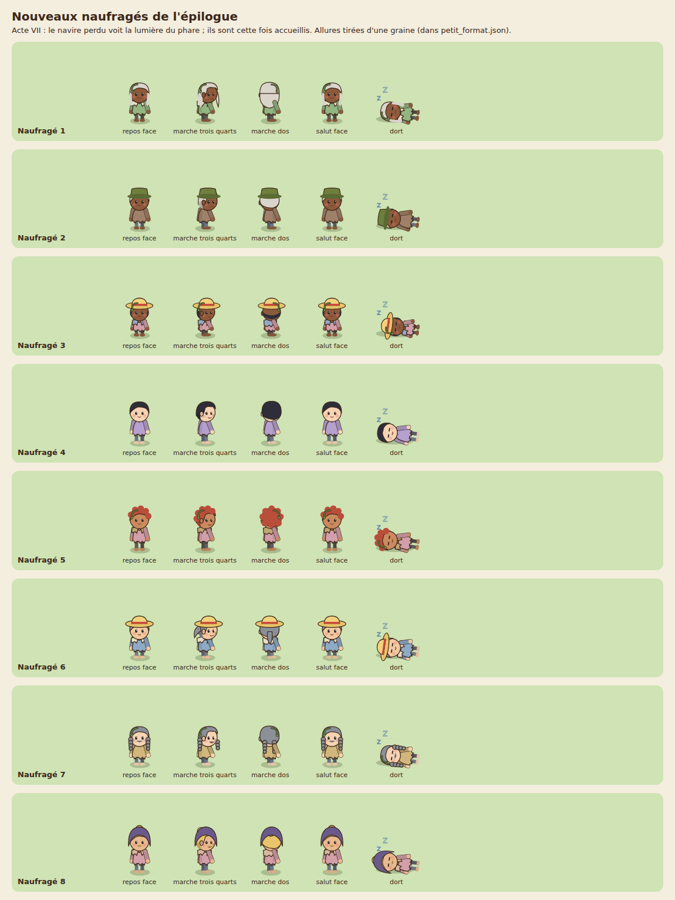
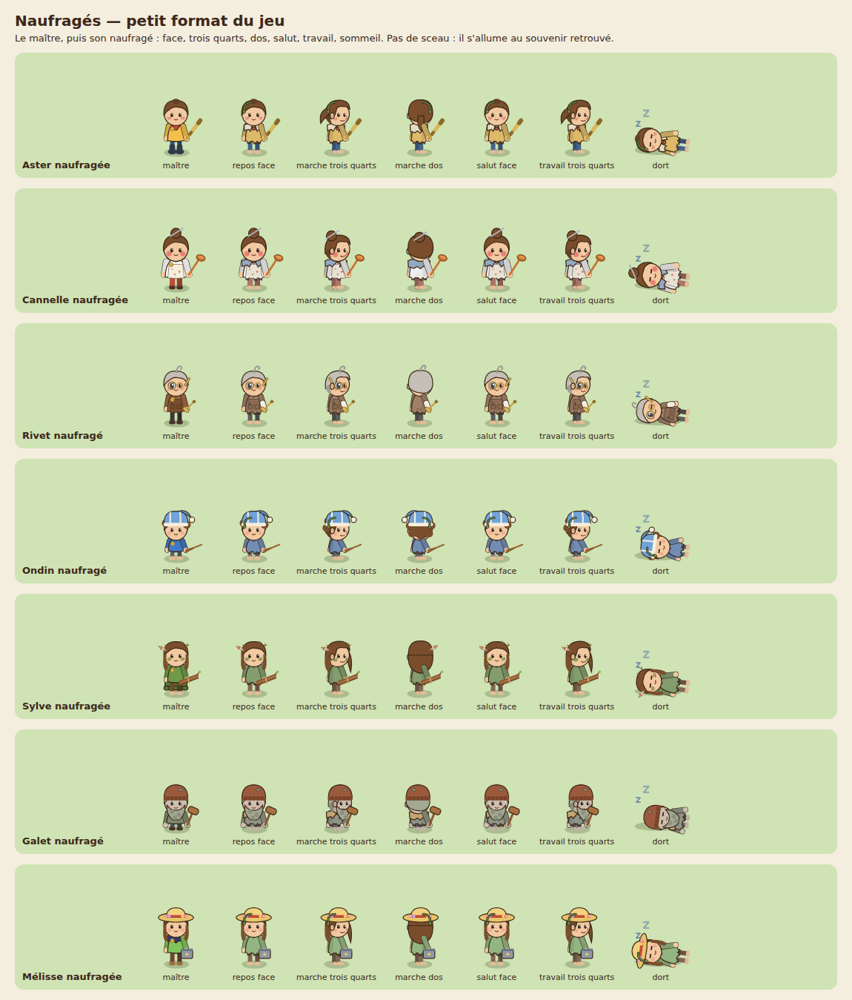

Assets SVG de l'île
3744 dessins au trait de la troupe, calés sur les cadres et les ancres du jeu (× 1,25). Les SVG sont dans svg/, les conventions dans README.md.
▶ Les 7 maîtres▶ Brume, Anya, le cerf, le Passeur▶ PNJ au petit format▶ Animaux▶ Décor▶ Bâtiments▶ Météo▶ Les naufragés▶ Naufragés au petit format▶ Le camp▶ Ruines des Anciens▶ Bêtes orientées▶ Coffres
Personnages
 expressions aster
expressions aster expressions cannelle
expressions cannelle expressions galet
expressions galet expressions melisse
expressions melisse expressions ondin
expressions ondin expressions rivet
expressions rivet expressions sylve
expressions sylve planche aster
planche aster planche cannelle
planche cannelle planche galet
planche galet planche melisse
planche melisse planche ondin
planche ondin planche rivet
planche rivet planche sylve
planche sylve
pnj habitants
pnj visiteursNaufragés
 expressions en marche
expressions en marche
naufrages arrivees naufrages debout
naufrages debout naufrages endormis
naufrages endormis
naufrages epilogue naufrages expressions
naufrages expressions
naufrages petit formatVivants


Animaux
 animaux bestiaire
animaux bestiaire animaux bois
animaux bois animaux climat
animaux climat animaux eau
animaux eau animaux familiers
animaux familiers animaux ferme
animaux ferme animaux mer
animaux mer animaux orientes bestiaire
animaux orientes bestiaire animaux orientes bois
animaux orientes bois animaux orientes climat
animaux orientes climat animaux orientes eau
animaux orientes eau animaux orientes familiers
animaux orientes familiers animaux orientes ferme
animaux orientes ferme animaux orientes mer
animaux orientes mer